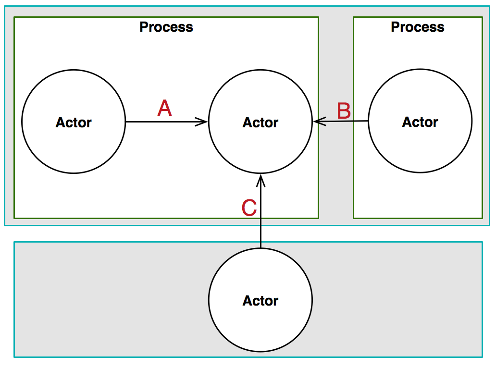

Actors
Properties of Actors
- Actors are persistent
- Encapsulate internal state
- Actors are asynchronous
What Can Actors Do
- Create new actors
-
Receive messages and in response:
- make local decisions (e.g. alter local state)
- perform arbitrary, side-effecting action
- send messages
- respond to the sender 0 or more times
- Process exactly one message at a time
Actors
Do not communicate by sharing memory; instead, share memory by communicating.‐ Effective Go
$80+ Person A wishes to withdrawl
$60+ Person B wishes to withdrawl
$50
Checking Account
Checking Account
Checking Account

Actor Communication
Properties of Communication
- No channels or intermediaries (such as in CSP)
- "Best Effort" delivery
- At-most-once delivery
- Messages can take arbitrary long to be delivered
- No message ordering guarantees
Address

Address
- Identifies an Actor
- May also represent a proxy / forwarder to an Actor
- Contains location and transport information
- Location transparency
Address
- One address may represent many actors (pool)

Address
- One actor may have many addresses

Supervision
Properties of Supervision
- Constantly monitors running state of actor
- Can perform actions based on the state of the actor (e.g. unhandled error)
Transparent Lifecycle Management
Actor Use-Cases
- Processing pipeline
- Streaming data
- Multi-user concurrency
- Systems high uptime requirements (Ericsson)
- Applications with shared state
Batch Job Processing
Breaking Up The Work
Breaking Up The Work

Breaking Up The Work
Breaking Up The Work
Breaking Up The Work
Breaking Up The Work
Breaking Up The Work
Anti Use-Cases
- You are working on a non-concurrent system
- Performance Critical Applications
- Non-concurrent communication is involved
- There is no mutable state
Drawbacks
Too Many Actors
Testing